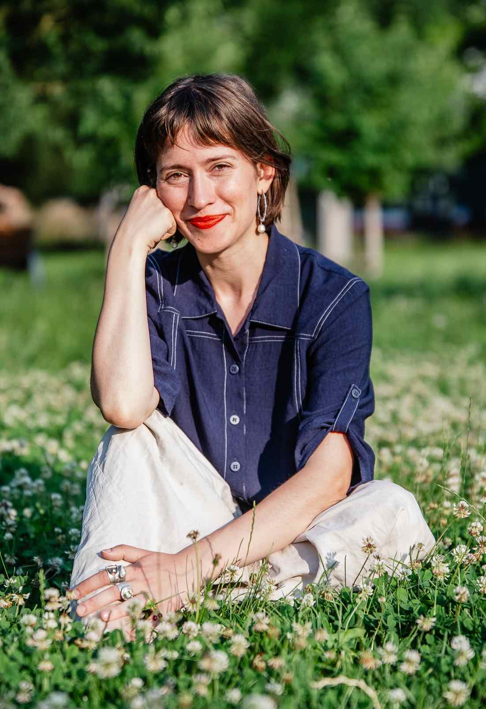
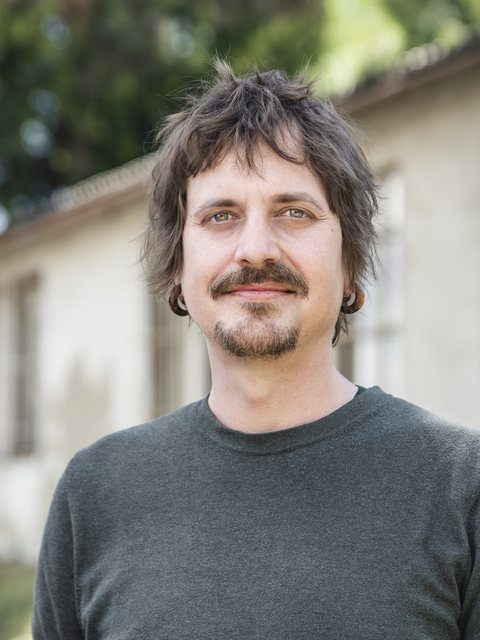
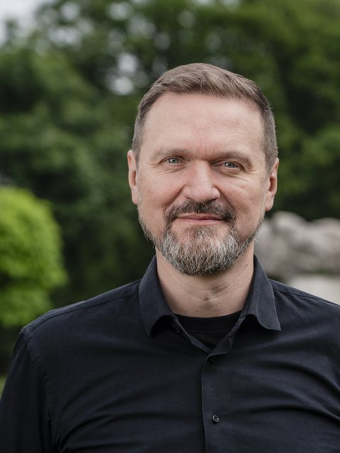
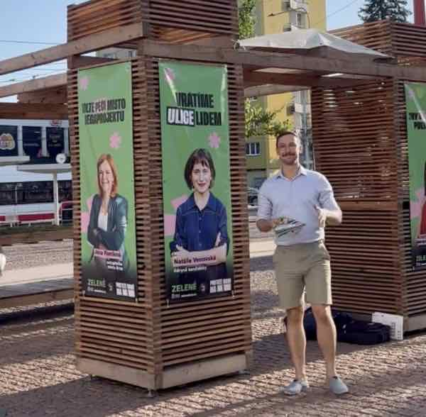

Natálie Vencovská
Budoucí náměstkyně primátora pro životní
prostředí a udržitelný rozvoj města
Jsme ve vedení Brna. Zjistěte, co jsme vyjednali
Zelené Brno podepsalo koaliční smlouvu na volební období 2026–2030. Do programového prohlášení rady města se dostala většina priorit, se kterými jsme šli do voleb: město přestane prodávat byty a začne stavět další, děti a senioři budou jezdit MHD zdarma a do ulic se vrátí stromy a stín.
Na této stránce najdete tiskovou zprávu, podrobný přehled toho, co jsme prosadili, popis resortu, který má vést Natálie Vencovská, a odpovědi na nejčastější otázky.
Děkujeme všem, kdo nám dali hlas, kdo s námi kampaň dobrovolně táhli a kdo nás podpořili. Bez vás bychom u stolu neseděli.
Teď začíná práce na tom, aby se program propsal do ulic a čtvrtí. Chcete u toho být s námi? Přidejte se k Zelenému Brnu.
Co jsme prosadili do programu
Níže je přehled hlavních bodů našeho programu, které se do programového prohlášení rady města dostaly. Nejde o úplný výčet.
BydleníMěsto přestane prodávat a začne stavět Rozbalit více
V kampani jsme upozorňovali, že Brno má 1 592 prázdných městských bytů a za roky 2024 a 2025 dokončilo jen dva nové. Programové prohlášení teď město zavazuje ukončit prodej bytů a bytových domů, byty urychleně opravovat a strategické pozemky místo prodeje aktivně spravovat. Majetek, který město potřebuje pro bydlení, tak nebude privatizován a dostane náležitou péči.
Výstavba nových obecních nájemních bytů se stává velkou prioritou města a program myslí i na zajištění peněz. Na novou výstavbu půjde 10 % vybraného nájemného, město využije úvěrové rámce Evropské investiční banky a vypíše městské dluhopisy. Příspěvek developera na infrastrukturu bude moci mít podobu hmotnou v podobě bytů nebo finanční, za kterou se městské byty postaví. Vedle vlastní výstavby může město investovat do nových nájemních domů i společně se soukromým partnerem formou PPP projektů.
Správa obecních bytů se zjednoduší. Vznikne jednotný elektronický systém pro nedoplatky, havarijní hlášení, dálkové odečty energií a transparentní evidenci žádostí. Pravidla přidělování obecních bytů budou respektovat všechny městské části, takže člověk, který shání byt, už nebude bloudit mezi desítkami různých pravidel.
K naplnění těchto závazků máme konkrétní nástroj: nominujeme předsedu či předsedkyni představenstva Realitní společnosti města Brna, která má výstavbu nových městských bytů na starosti. Na Brně-středu, kde je nejvíc neopravených prázdných bytů, jsme si řekli o funkci uvolněného zastupitele pro byty a jejich opravy.
ŠalinkartaZdarma pro děti a seniory, 1 200 Kč pro všechny občany a občanky Brna Rozbalit více
Děti do 15 let a senioři od 65 let budou jezdit MHD zdarma. Od roku 2028 bude roční šalinkarta stát 1 200 Kč pro každého, kdo má v Brně trvalý pobyt. Levné a pohodlné šaliny jsou podle nás nejlepší důvod nechat auto doma a ulevit tak celému městu. Město podpoří zrychlení přípravy severojižního kolejového diametru a šalina přes náměstí Svobody zůstane.
Veřejný prostorUlice, kde se dobře cítí i děti Rozbalit více
Pohodlí a bezpečí dětí bude měřítkem kvality každé ulice – kde se dobře cítí děti, tam se dobře cítí všichni. Ulice a náměstí se budou stavět a opravovat tak, aby podporovaly chuť trávit čas venku a sousedské vztahy.
Kancelář architekta města zpracuje manuál veřejného prostoru, který bude závazný pro město i městské části, a metodiku, podle které se při výběru projektantů bude hodnotit i kvalita, ne pouze cena. Architektonické a umělecké soutěže budou standardem vybraných městských projektů.
Město bude dávat přednost opravám svého majetku před bouráním a na kvalitu, design a umění bude myslet už při zadávání veřejné zakázky.
Přednádražní prostor se změní v zónu bez aut a se zelení, podle výsledků architektonické soutěže – a přilehlý podchod projde kompletní rekonstrukcí. Ulice Veveří se po projednání s veřejností promění v živý městský bulvár.
Bezpečnost chodců a cyklistů bude pro město prioritou. V rezidenčních čtvrtích vzniknou zóny 30 a vybudují se bezpečné cyklostezky podle schválené strategie.
Město začne systematicky bojovat s vizuálním smogem: omezí reklamní nosiče na svých pozemcích a bude odstraňovat nelegální billboardy. Ohňostrojový festival Ignis Brunensis dostane peníze jen na světelnou show s hudbou, bez škodlivého hluku pro lidi i zvířata.
ZeleňZeleň, voda a stín Rozbalit více
Město bude chránit hodnotnou zeleň a každý projekt bude posuzovat individuálně. Ulice Brna se zazelenají podle koncepčního plánu výsadby. Stromy budou chráněné při rekonstrukcích, sítě se budou ukládat do kolektorů a stromy dostanou souvislý prostor pro kořeny, aby v ulici skutečně vyrostly.
V rozvojových lokalitách musí zůstat nejméně 30 % zeleně. Na vlny veder bude připravená síť chladicích míst a pomoc pro nejzranitelnější seniory a dlouhodobě nemocné.
EnergieEnergie a odpady Rozbalit více
U nových městských budov bude fotovoltaika standardem a město otestuje zastřešení parkovišť solárními panely. Město využije komunitní energetiku pro sdílení elektřiny s předvídatelnějšími cenami. Na ulici Životského vznikne Cirkulární dům s opravnou spotřebičů, výměnou věcí a nábytkovou bankou.
RadniceOtevřená radnice Rozbalit více
Zastupitelstvo přestane používat tajné hlasování. Výjimky z územního plánu, které by podle nového stavebního zákona mohla schvalovat rada, zůstanou stále předmětem veřejného rozhodování zastupitelstva.
Investice nad jednu miliardu korun projdou analýzou nákladů a přínosů, nezávislou analýzou projde i projekt horkovodu. Projekt lanovky na kampus končí. Participativní rozpočet vzroste na 50 milionů korun ročně.
KulturaKultura a místa pro tvorbu Rozbalit více
Financování kultury bude transparentní a předvídatelné. O dotacích budou rozhodovat odborné komise a svá rozhodnutí zveřejní včetně odůvodnění. Podmínky dotačních programů a individuálních dotací se srovnají a individuální dotace budou výjimkou pro akce, které nejde podpořit z programů. Město společně s městskými částmi, univerzitami a komunitami podpoří využití ateliérů a zkušeben, například v areálu na Kraví hoře.
Sociální věciRovné příležitosti a sociální věci Rozbalit více
Město bude rozvíjet plány a opatření pro rovné příležitosti a kvalitní vzdělávání všech dětí, včetně romských dětí a dětí cizinců. Využije při tom zkušenosti z Brna-severu.
Město se bude inspirovat úspěšnými programy ukončování bezdomovectví. Počet sociálních a krizových bytů se navýší rovnoměrně po celém městě.
Rodinám s dětmi pomůže vyšší kapacita školek během letních prázdnin a podpora příměstských táborů u základních škol a městských organizací. Město prověří rozšíření rodičovských voucherů na kulturní, sportovní a volnočasové organizace a podpoří vyšší slevy pro děti do 15 let a studenty/studentky.
Resort životního prostředí
Co povede Natálie Vencovská
Natálie Vencovská se stane náměstkyní primátora pro životní prostředí a udržitelný rozvoj města. Pod její resort patří dva odbory magistrátu, odbor životního prostředí a odbor vodního a lesního hospodářství a zemědělství, a také několik městských firem a organizací. Rozpočet města na životní prostředí v roce 2026 činil přes jednu miliardu korun a další stovky milionů jdou na komunální služby.
Resort rozhoduje o věcech, které lidé v Brně vidí každý den:

Stromy a parky
Veřejná zeleň města Brna pečuje o centrální parky a stromořadí v ulicích a má významné slovo při rekonstrukcích ulic.
Odpady
SAKO Brno zajišťuje svoz, třídění a energetické využití odpadů. Právě teď v něm probíhají investice za pět miliard korun.
Lesy a přehrada
Lesy města Brna drží největší obecní lesní majetek v republice, 80 kilometrů čtverečních, a spravují i rekreační oblast Brněnské přehrady. Resort odpovídá také za čištění přehrady.
Voda a řeky
Příprava protipovodňových opatření, revitalizace nábřeží a péče o artéské vody pod Brnem.
ZOO Brno
Vzdělávací instituce v oblasti ochrany přírody s desítkami tisíc návštěvníků a strategií rozvoje za stovky milionů korun.
Adaptace na změnu klimatu
Jak se město připraví na horka, sucho a přívalové deště.
Dotace
Zelené střechy, Dešťovka, Nové parky pro Brno, obnova zeleně kolem bytových domů nebo ekologická výchova. Odbor životního prostředí spravuje i dotaci na zlevněnou šalinkartu.
Hřbitovy
Pod resort patří také Pohřební a hřbitovní služby města Brna a Správa hřbitovů.
Velká část priorit našeho programu leží právě v této oblasti: stromy a stín v ulicích, voda, která se vsakuje tam, kam spadne, parky blízko domova a město připravené na horka. Resort poskytuje peníze, lidi i firmy, abychom to mohli dělat. Napříč městem chceme spolupracovat s Kateřinou Basel, která povede územní plánování, a s Adamem Zemkem, který povede dopravu, protože právě tyto tři oblasti společně rozhodují o tom, jak brněnské ulice vypadají.
Naši lidé a nástroje
Při vyjednávání nám šlo o to, abychom naplňování programu mohli skutečně ovlivňovat tam, kde leží naše priority: v životním prostředí, veřejném prostoru a bydlení. V zastupitelstvu nás je díky vám šest a podle koaliční dohody budeme mít tyto pozice:
-
Natálie Vencovská
Budoucí náměstkyně primátora pro životní prostředí a udržitelný rozvoj
-
Jana Drápalová
Předsedkyně klubu zastupitelek a zastupitelů
-
Kristýna Fuchsová
Uvolněná předsedkyně výboru pro národnostní menšiny
-

Jiří Malenovský
Zastupitel města Brna
-

Petr Kunc
Zastupitel města Brna
-
Jasna Flamiková
Zastupitelka města Brna
Další pozice a nominace
- Realitní společnost města Brna: nominujeme předsedu představenstva. Společnost má na starosti výstavbu nových městských bytů.
- Lesy města Brna a Pohřební a hřbitovní služby města Brna: podle smlouvy nominujeme předsedy představenstev. Zastoupení budeme mít v představenstvu každé další městské firmy a ve všech dozorčích radách.
- Komise a výbory: alespoň jeden člen v každé komisi rady města a ve všech výborech zastupitelstva, tedy finančním, kontrolním a pro národnostní menšiny.
- Brno-střed: kde je nejvíc neopravených prázdných městských bytů, jsme si při vyjednávání, které stále není u konce, řekli o funkci uvolněného zastupitele pro byty a jejich opravy. Bydlení tak chceme ovlivňovat z obou stran: na úrovni celého města přes realitní společnost i tam, kde prázdné byty fyzicky jsou.
Kristýna Fuchsová
Právnička, zastupitelka města Brna
Uvolněná funkce
Předsedkyně výboru pro národnostní menšiny
Kristýna Fuchsová bude uvolněnou předsedkyní výboru zastupitelstva pro národnostní menšiny. Proč jsme o tuto funkci usilovali?
Brno je živé a rozmanité město, kde se potkává bohatá historie tradičních menšin s výzvami moderní migrace. Podíl cizinců, kteří tu žijí, se za posledních dvacet let zvýšil pětinásobně. Práci výboru proto chceme postavit na rovnováze mezi podporou spolkového a kulturního života menšin a aktivní městskou politikou soudržnosti. Zároveň ji chceme modernizovat a otevřít aktuálním potřebám obyvatel Brna.
Jako uvolněná předsedkyně se Kristýna Fuchsová bude věnovat několika oblastem:
- celoměstskému plánu rovného přístupu ke kvalitnímu vzdělávání pro romské a ukrajinské děti i děti dalších cizinců,
- ochraně zranitelných rodin před obchodem s chudobou a nekalými praktikami na trhu práce a s bydlením,
- zázemí pro spolky a pro výuku mateřských jazyků.
Výbor chce otevřít Integrační strategii města Brna připomínkám samotných menšin a vytvořit fórum, kde budou moci mladí lidé z menšin a z rodin cizinců přímo říct, co od města potřebují. Svou práci propojí se sociálním resortem náměstkyně Marie Jílkové a s opatřeními pro rovné příležitosti dětí, která jsou v programovém prohlášení.
Proč jsme v koalici
Získali jsme téměř 9 % hlasů a s tím i odpovědnost.
Od voličů jsme dostali nejsilnější mandát za posledních dvacet let, abychom prosadili to, co jsme slíbili. S tím jsme do jednání vstoupili. Formát koaliční spolupráce nastavil vítěz voleb a my jsme se mohli rozhodnout, jestli jednání přijmeme, nebo odmítneme. S takovým mandátem by bylo neodpovědné nepokusit se naše priority vyjednat.
S partnery máme velký programový průnik.
Z analýzy volebních programů vyplývá, že nejvíc společného máme s vítěznými Lidovci a Starosty a s Piráty. Při jednáních jsme opakovaně naráželi na to, že bydlení a kvalitní veřejný prostor považují za důležité i voliči ostatních stran. Naše priority tak nejdou proti zbytku koalice. Oceňujeme, že v radě města mají většinu ženy (7 z 11).
Partneři také chtějí dělat věci jinak než doposud.
Od všech stran jsme cítili ochotu hledat programovou shodu a měnit zaběhnuté postupy. Většinou jsme jednali s novou generací politiků a političek, kteří mají na řadu věcí modernější pohled než jejich předchůdci. 9 z 11 členů a členek rady města je tam poprvé.
Program je závazný pro celou koalici.
Programové prohlášení podepsali všichni partneři a jsou jím vázáni všichni zvolení zastupitelé a zastupitelky koalice. Důležité pro nás bylo i to, jak bude město rozhodovat: bez tajného hlasování a s výjimkami z územního plánu projednávanými veřejně na zastupitelstvu.
Máme i nástroje, jak program naplnit.
Vedle programu jsme vyjednali pozice, ze kterých můžeme jeho naplňování ovlivňovat: resort životního prostředí, vedení realitní společnosti, která staví městské byty, a uvolněnou předsedkyni výboru pro menšiny.
O vstupu rozhodli členové a členky.
Účast v koalici schválila hlasováním členská základna Strany zelených v Brně.
Časté otázky
Proč jste šli do koalice, do které byla přizvána i ODS? Rozbalit více
Složení koalice určuje vítěz voleb. My jsme se rozhodovali podle toho, jestli se dokážeme shodnout na programu a jestli budeme mít možnost naše priority skutečně prosazovat. Obojí se podařilo. Programové prohlášení podepsala celá koalice a jsou jím vázáni všichni její zastupitelé, včetně těch zvolených za ODS a TOP 09.
Bydlení bude mít v radě na starosti radní za ODS. Nebojíte se další privatizace bytů? Rozbalit více
Rámec práce radního pro bydlení je jasný. Programové prohlášení zavazuje město ukončit prodej bytů a bytových domů a z výstavby nových obecních bytů dělá velkou prioritu, včetně zajištění financí. Výstavbu má na starosti Realitní společnost města Brna, ve které budeme mít předsedu představenstva (a která nyní staví projekt družstevního a obecního bydlení na Kamenném vrchu). Pronájmy městských bytů povede náměstkyně Marie Jílková a na Brně-středu jsme si řekli o uvolněného zastupitele pro byty a jejich opravy.
Co dělá Realitní společnost města Brna? Rozbalit více
Je to akciová společnost vlastněná městem. Dnes mimo jiné zprostředkovává pronájem městských nebytových prostor a připravuje družstevní bydlení, například projekt na Kamenném vrchu s více než 300 byty. Chceme, aby přes ni šly i další projekty nové městské výstavby.
Co když se program nebude plnit? Rozbalit více
Naše účast v koalici stojí na dohodě, že se programové prohlášení bude plnit. To je podmínka, se kterou jsme do koalice šli a kterou schválila členská základna. Budeme pravidelně informovat, co se daří a co ne, sledujte náš web, sociální sítě nebo si
Proč je potřeba uvolněná předsedkyně výboru pro národnostní menšiny? Rozbalit více
Brno je dnes multikulturní město a podíl cizinců, kteří tu žijí, se za dvacet let zvýšil pětinásobně. Sociální vyloučení, integrace uprchlíků z Ukrajiny nebo vzdělávání dětí, které doma nemluví česky, potřebují někoho, kdo se jim bude věnovat soustavně.
Jak se můžu zapojit?
Přidejte se k nám a pomozte prosazovat to, s čím jsme do voleb šli.
Pro naplňování programu potřebujeme i vás: lidi, kteří nám řeknou, co v jejich ulici chybí, pošlou podněty, co by se mělo zlepšit, nebo aktivně pomohou s naší prací.
Podpořte nás i po volbách
Máme na vás jednu prosbu. Kampaň skončila a čtyři roky práce začínají. Dvakrát větší klub potřebuje zázemí a pravidelné dary nám dovolí plánovat dopředu. Pokud si to můžete dovolit, nastavte si prosím trvalý dar. Už třeba 300 Kč měsíčně udělá velký rozdíl.
Zapojte se

Volby skončily, práce pro lepší Brno pokračuje. Přidejte se k nám a pomozte prosazovat to, s čím jsme do voleb šli.
Zůstaňme v kontaktu
Díky vám je nás v zastupitelstvu dvakrát víc. Budu vám psát, co se nám daří prosadit, o čem se v Brně rozhoduje a kdy se můžeme potkat.
Natálie Vencovská, zastupitelka města Brna